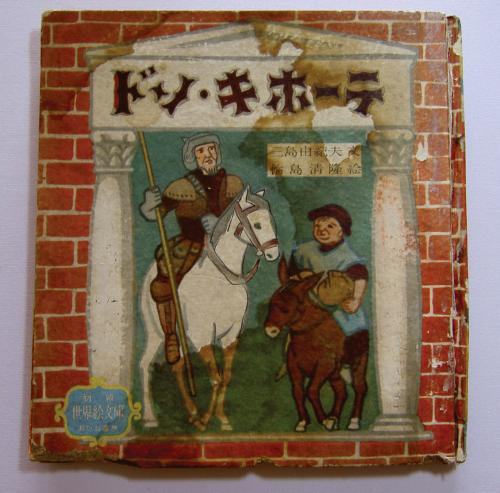
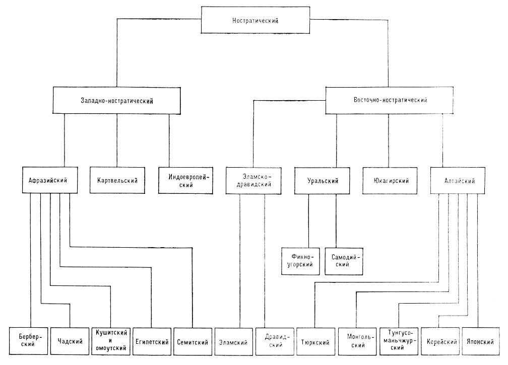

Ресурсы для работы с японским языком
В этом посте собраны бесплатные онлайн-ресурсы для изучения японского языка и перевода. Корпусов японского языка здесь нет, о них, возможно, будет отдельный пост с пояснениями. Если вы знаете интересные ресурсы, в комментариях пишите свои дополнения, пост будет обновляться.
Русскоязычные
Словарь Warodai
Японско-русский словарь иероглифов
Англоязычные
Словарь JapanDict
Словарь Tangorin
Словарь Jisho
Рукописный ввод иероглифов
Лексика, диалоги, материалы для чтения с переводом на английский JP Navi
Японоязычные
Словарь Weblio
Порядок черт Kakijun
Словарь иероглифов Kanji Jiten Online
Игра карута от NHK
Японские сказки
Библиотека Aozora
Библиотека Japanese Text Initiative
Хитроумный ронин Дон Кихот Токийский
38-летний Мисима в автобиографическом эссе “Время моих странствий” вспоминает о том, как в школьные годы увидел фильм Георга Пабста “Приключения Дон Кихота” с Федором Шаляпиным в главной роли. В 1952 году в Японии была издана книга “Дон Кихот”, где автором значился Юкио Мисима.

“Дон Кихот”, 1952 год
В смутное послевоенное время издательство “Аканэ” выпускало детскую серию “Иллюстрированные произведения мировой литературы”. В ней, помимо прочего, публиковались произведения Ясунари Кавабаты и Юкио Мисимы. Вот только названия у книг были подозрительно знакомые. Например, под фамилией Мисимы помимо “Дон Кихота” были изданы “Сон в летнюю ночь”, “Гамлет” и “Алиса в Стране чудес”.

“Приключения Алисы в Стране чудес”, 1956 год
Конечно, это были переводы или, вернее сказать, переложения. В 1972 году под редакцией жены писателя Юко Хираока вышла полная библиография, где эти четыре произведения значатся как не принадлежащие его перу. Эти книги больше не издаются, и их очень сложно раздобыть. Мисима был их автором примерно настолько, насколько Борис Заходер — автор “Винни-Пуха”. Интересно было бы прочесть такую интерпретацию западной классики, в отзывах пишут, что эти книги очень “в духе Мисимы”, хоть и предназначались для детей. Наверное, эти произведения были близки писателю, ведь и сумасбродную попытку Мисимы совершить государственный переворот японцы нередко называют донкихотством.
Почему японский язык такой сложный?
В самой формулировке вопроса кроется подвох, ведь языковая сложность — понятие относительное и трудноизмеримое. До недавнего времени лингвисты принимали за аксиому, что все языки одинаково сложны, а сейчас ученые могут с уверенностью сравнивать сложность только отдельных аспектов языка. Носителям разных языков разные иностранные языки кажутся простыми или сложными. Например, украинский может казаться легким вам, но не датчанину или китайцу. А вот изучение японского русскоговорящим часто кажется непосильной задачей, именно с этой точки зрения мы его и рассмотрим: с точки зрения трудностей для носителя русского языка.
Дальнее родство и непохожая лексика
В российском научном сообществе принято принимать гипотезу о происхождении японского языка, согласно которой японский принадлежит к алтайской языковой семье и родственен, например, корейскому, монгольскому и айнскому языкам. Не вдаваясь в подробности, скажу, что русский принадлежит к индо-европейской языковой семье, которая, по мнению некоторых исследователей, на языковом дереве встречается с алтайской только на уровне ностратической макросемьи. А ностратическая макросемья по некоторым оценкам распалась в 13 тыс. до н. э. То есть уже много тысячелетий мы с японцами в языковом смысле не родственники. Безусловно, и русский, и японский языки все это время заимствовали слова из других языков, но серьезно помочь изучающему японский могут разве что многочисленные японские заимствования из английского.

Схема ностратических языков из "Лингвистического энциклопедического словаря" (русский язык в индоевропейской семье).
Сложная письменность
Японская иероглифика была заимствована из Поднебесной, но в современной Японии в ходу намного меньше иероглифов, чем в Китае: японский школьный иероглифический минимум — 2136 иероглифов, китайский — 3500. Однако будущим японистам не стоит вздыхать с облегчением: помимо иероглифов в японском используются две слоговые азбуки по 46 знаков каждая. И латинский алфавит для аббревиатур, куда же без него.
Непохожий порядок слов
Лингвисты любят классифицировать языки разными способами, один из них — классификация по базовому порядку слов в предложении, а именно по положению подлежащего (S - subject), сказуемого (V - verb) и прямого дополнения (O - object). В русском языке относительно свободный порядок слов, но нейтральным считается порядок SVO: "Мама мыла раму”. В японском языке базовый порядок слов SOV, то есть сказуемое всегда будет в конце предложения:
母が窓枠を洗った
Haha ga madowaku wo arat-ta
Мама ИМ. П. рама ВИН. П. мыть-ПРОШ. ВР.
'Мама мыла раму.'
Отличное морфологическое строение
Для русского языка характерен флективный строй. Словоизменение при таком строе осуществляется с помощью окончаний, совмещающих в себе сразу несколько значений (“син-ий”, окончание указывает на именительный падеж, единственное число и мужской род). Японский язык относится к агглютинативным языкам, в нем словоизменение чаще осуществляется с помощью аффиксов, каждый из которых имеет лишь одно значение и границы которых хорошо видны. Слово в агглютинативных языках уподобляется “паровозу с вагончиками”, и таких вагончиков может быть очень много:
食べたくなかった
tabe-ta-ku-na-katta
'Я/мы/он/она/они не хочу/хотим/хочет/хотят есть.'
taberu ('Я ем/Я буду есть')
tabetai ('Я хочу есть')
tabetakunai ('Я не хочу есть')
tabetakunakatta ('Я не хотел есть')
Это, несомненно, значимое отличие от флективных языков, но в агглютинативных языках намного меньше исключений, а правила построения словоформ достаточно прямолинейны. На мой взгляд, это сильно упрощает изучение грамматики.
Музыкальное ударение
В русском языке силовое ударение, при котором выделение слога происходит за счет усиления выдоха (грубо говоря, за счет повышения громкости). В японском же музыкальное ударение, при котором слог или несколько слогов выделяются высотой звука. А вот в тоновых языках (например, китайском) каждый слог имеет свой тон. Так что при изучении японского вам пригодится музыкальный слух üòÉ
Чуждый культурный контекст
Недостаточно просто знать необходимые выражения, нужно понять довольно отличную систему правил поведения, чтобы не использовать их ни к селу ни к городу. Хотя никакой откровенной поведенческой экзотики современный европеец в современной Японии не встретит, все же подстроиться под местные приличия бует непросто. К тому же, в японском есть отдельный пласт вежливой речи — кэйго — с детально прописанными правилами и строгой иерархией, в котором сами японцы часто путаются.